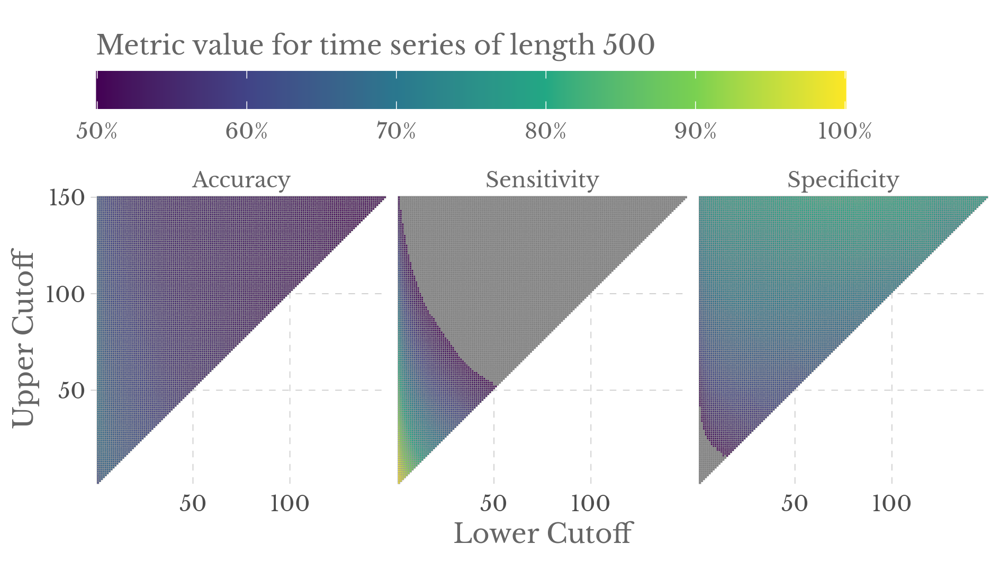
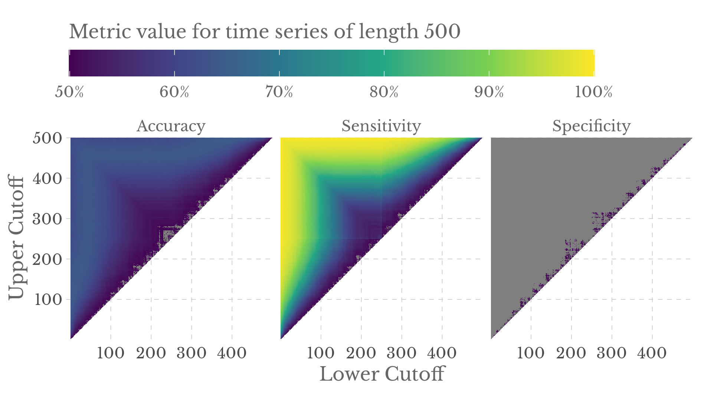

Simulation study
Scope
This document is intended to run the simulation study for subordinated fractional Gaussian noise time series of length 500 and parameter \(\alpha = 1\). For more details, please check our paper.
Import helper functions
setwd(here::here())
source('helpers/00_libraries.R')
source('helpers/01_simulation_helpers.R')
source('helpers/02_regression_helpers.R')
source('helpers/03_evaluation_helpers.R')
Rcpp::sourceCpp('helpers/04_estimate_variance_C.cpp')Define necessary parameters
# variance tag will be used to identify computed data
variance_tag <- if (params$infinite_variance) "infVar" else "finVar"
H_lower <- if (params$infinite_variance) 0.6 else 0.3
H_upper <- if (params$infinite_variance) 0.9 else 0.7
kMax_cutoff <- 150
Hs <- seq(H_lower, H_upper, length.out = 12) # Hurst parameter
Hs [1] 0.6000000 0.6272727 0.6545455 0.6818182 0.7090909 0.7363636 0.7636364
[8] 0.7909091 0.8181818 0.8454545 0.8727273 0.9000000# metric set to evaluate classification
my_mset <- metric_set(accuracy, sens, spec)
n_seeds <- params$n_seeds # simulations per Hurst parameter and TMax
n_seeds[1] 1000TMax <- params$TMax # ts length
TMax[1] 500Simulate fGN time series
# Enable parallel-processing
plan(multisession, workers = 2)
time_series_dat <- simulate_many_fGN(TMax, Hs, n_seeds)
if (params$infinite_variance) {
set.seed(253245)
mu <- runif(100, min = 0, max = 1)
time_series_dat <- time_series_dat %>%
mutate(
# Subordinate
ts = map(ts, ~exp(.^2 / 2)),
# Convert to Binomial process via discrete measure mu
ts = map(ts, ~convert_to_bernoulli(., mu = mu))
)
}
print(time_series_dat, n = 2)# A tibble: 12,000 × 3
simu_id H ts
<int> <dbl> <list>
1 1 0.6 <dbl [500]>
2 2 0.6 <dbl [500]>
# … with 11,998 more rowsCompute the periodograms and variances
vars_and_periodograms <- time_series_dat %>%
mutate(
variance = map(ts, estimate_variance_C, kMax = min(TMax / 3, kMax_cutoff)),
periodogram = map(ts, estimate_periodogram)
)
# Save as intermediate result
write_rds(
vars_and_periodograms,
glue::glue('computed_data/{variance_tag}_vars_and_periodograms_{TMax}.rds')
)
print(vars_and_periodograms, n = 2)# A tibble: 12,000 × 5
simu_id H ts variance periodogram
<int> <dbl> <list> <list> <list>
1 1 0.6 <dbl [500]> <dbl [150]> <dbl [500]>
2 2 0.6 <dbl [500]> <dbl [150]> <dbl [500]>
# … with 11,998 more rowsNotice that the variance vectors are shorter because by default the variance is only estimated until a certain threshold. This is done to save time because the regression is done on a smaller window anyway (because the variance estimator does not perform well there).
Compute grid estimates
Now, we will compute grid estimates.
Variance estimator
Let us begin with the variance estimator.
# We restrict our grid from above because the variance estimator
# never performs well for huge cutoff values anyway.
grid <- compute_grid(TMax = min(TMax / 3, kMax_cutoff))
variances <- vars_and_periodograms %>%
select(-periodogram)
# Computes var grid estimates and saves results to HDD
compute_var_grid_estimates(variances, grid, TMax)GPH estimator
Of course, we do the same thing for the GPH estimator. Note that this estimator can use the full grid.
grid_GPH <- compute_grid(TMax = TMax)
periodograms <- vars_and_periodograms %>%
select(-c(variance, ts))
# Computes GPH grid estimates and saves results to HDD
compute_GPH_grid_estimates(periodograms, grid_GPH, TMax)Compute metrics for each cutoff
Variance Estimator
plan(sequential) # Switch back to sequential processing
metrics_var <- collect_and_evaluate_metrics(
TMax, my_mset, params$infinite_variance, estimator = 'variance'
)
# Save as intermediate result
write_rds(
metrics_var,
glue::glue('computed_data/{variance_tag}_metrics_var_{TMax}.rds')
)GPH Estimator
metrics_GPH <- collect_and_evaluate_metrics(
TMax, my_mset, params$infinite_variance, estimator = 'GPH'
)
# Save as intermediate result
write_rds(
metrics_GPH,
glue::glue('computed_data/{variance_tag}_metrics_GPH_{TMax}.rds')
)Visualizations
These metrics can be visualized as follows.
Code
ggsave(
filename = glue::glue('images/{variance_tag}_metrics_var_{TMax}.png'),
plot = plot_metrics(metrics_var, uBd_max = min(TMax / 3, kMax_cutoff)),
width = 16,
height = 9,
units = 'cm',
dpi = 300,
bg = 'white'
)
ggsave(
filename = glue::glue('images/{variance_tag}_metrics_GPH_{TMax}.png'),
plot = plot_metrics(metrics_GPH, uBd_max = TMax),
width = 16,
height = 9,
units = 'cm',
dpi = 300,
bg = 'white'
)Variance estimator

GPH estimator

We are mainly interested in comparability of the two estimators under best conditions. So, let us compute the best overall cutoff values w.r.t. to Accuracy.
Top 5 cutoffs of the Variance estimator
| lBd | uBd | Accuracy | Sensitivity | Specificity |
|---|---|---|---|---|
| 1 | 42 | 68.64% | 86.82% | 50.47% |
| 1 | 43 | 68.63% | 86.45% | 50.82% |
| 1 | 34 | 68.62% | 90.22% | 47.03% |
| 1 | 41 | 68.62% | 87.28% | 49.97% |
| 1 | 36 | 68.61% | 89.33% | 47.88% |
Top 5 cutoffs of the GPH estimator
| lBd | uBd | Accuracy | Sensitivity | Specificity |
|---|---|---|---|---|
| 392 | 495 | 64.76% | 93.45% | 36.07% |
| 5 | 108 | 64.76% | 93.45% | 36.07% |
| 8 | 111 | 64.75% | 92.73% | 36.77% |
| 389 | 492 | 64.75% | 92.73% | 36.77% |
| 323 | 474 | 64.73% | 94.20% | 35.27% |
Time for simulations
# A tibble: 9 × 4
chunk sec min hours
<chr> <dbl> <dbl> <dbl>
1 packages 5.89 0.1 0
2 parameters 0.05 0 0
3 simulate_ts 348. 5.79 0.1
4 estimate_vars_and_periodograms 388. 6.46 0.11
5 grid_estimates_variance 4033. 67.2 1.12
6 grid_estimates_GPH 67405. 1123. 18.7
7 compute_metrics 77.4 1.29 0.02
8 compute_metrics_GPH 870. 14.5 0.24
9 total 73130. 1219. 20.3